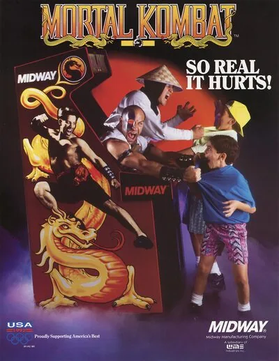

MAME (lr-mame2003)
Mortal Kombat
- Año: 1992
- Desarrollador: Midway
- Género: Lucha / Uno contra uno
- Jugadores: 2 jugadores
MECÁNICA DEL JUEGO
En Mortal Kombat los jugadores luchan contra un oponente. Quien acabe primero con la barra de energía del adversario se convierte en el ganador de la primera ronda y quien gane dos rondas es el vencedor de la partida. Cada ronda tiene un tiempo límite y si aún resta sangre en las barras de vida de los dos jugadores cuando el tiempo se acaba, el que haya sufrido menos daño es el vencedor de la partida.
Los jugadores pueden elegir a uno de los siete personajes. Mientras otros videojuegos contaban con personajes que se diferenciaban por su velocidad, tamaño, ataques, fuerza y la distancia y altura de sus saltos; los personajes de Mortal Kombat tenían muy pocas diferencias. El juego también se distinguía de otros por su sistema de botones único: cinco botones que formaban una letra "X". Cuatro botones estaban dedicados a los combos y las patadas altos y bajos y un botón estaba dedicado al bloqueo y se encontraba en el centro. También contaba con una palanca de ocho direcciones. Los ataques variaban de acuerdo con la distancia que tenía el jugador con respecto a su adversario y todos los personaje compartían un grupo de movimientos que se ejecutaban manteniendo la palanca en alguna de sus direcciones, como el barrido con la pierna o el "gancho". Este último elevaba al oponente por los aires y causaba gran daño.
Además, Mortal Kombat tenía formas únicas para ejecutar los movimientos especiales. La mayoría se ejecutaba empujando la palanca rápidamente hacia alguna dirección y presionando un botón. A diferencia de varios juegos de lucha, pocos movimientos requerían movimientos circulares. El co-diseñador del video juego, Ed Boon, comentó: "desde el comienzo, una de las cosas que nos diferenciaba de otros videojuegos eran los movimientos locos que poníamos, como las bolas de fuego y los movimientos mágicos"1. Otra de las novedades del juego fueron las fatalities (fatalidades), movimiento final que acababa con el adversario de una manera sangrienta.2
El sistema de bloqueo también distinguió al Mortal Kombat de otros videojuegos. A diferencia de Street Fighter, por ejemplo, los personajes sufrían un daño leve si recibían un ataque mientras se bloqueaban. Sin embargo, el bloqueo también permitía que los jugadores se defendieran de dichos ataques sin tener que alejarse y perdían muy poca energía si estaban agachados, por lo que los contraataques eran más efectivos. El juego introdujo, también, el "juggling" (malabares), que consistía en elevar al oponente por los aires y seguir atacándolo con una combinación de ataques mientras dicho oponente seguía indefenso en el aire. La idea fue tan popular que varios videojuegos la incluyeron posteriormente.
En el modo de un jugador, el usuario se enfrenta a cada uno de los siete personajes controlados por la máquina, incluida la "Mirror Match" ("partida espejo"), en la que se enfrenta a un duplicado del personaje seleccionado. Luego le siguen tres partidas de resistencia, de dos personajes cada una. Una vez que el jugador vence al primer oponente en dichas partidas, el segundo aparece y el tiempo se resetea; pero la barra de energía del jugador no se rellena. Al terminar la tercera partida de resistencia, el jugador se enfrenta al sub-jefe Goro y, finalmente, a Shang Tsung.
El juego puede comenzar con dos jugadores, o un segundo jugador puede integrarse mientras otro juega a solas. Si el primer jugador había vencido algunos oponentes y el segundo jugador lo vence luego de integrarse, este último retoma el modo de un jugador donde el primero quedó. Si no es el caso, el segundo jugador comienza un juego nuevo.
Entre algunas partidas, los jugadores pueden competir en un minijuego llamado "Test Your Might" ("Prueba tu fuerza") para ganar puntos adicionales. El minijuego exige que los jugadores rompan bloques compuestos de varios materiales llenando un medidor hasta cierto punto. Para ello deben presionar rápidamente unos botones. Los materiales son madera, piedra, acero, rubí y diamante; y cada uno requiere que se llene una mayor cantidad en el medidor y entrega más puntaje a los jugadores. El minijuego se puede jugar entre dos jugadores al mismo tiempo y los dos últimos materiales sólo están disponibles para dos jugadores.
ARGUMENTO
La historia de Mortal Kombat se desarrolla en la isla ficticia de Shang Tsung localizada en el Earthrealm (Reino de la Tierra) y siete de las locaciones de dicha isla son escenarios del juego. La introducción de Mortal Kombat II cuenta que Shang Tsung fue expulsado a la Tierra hace quinientos años y que, con la ayuda del monstruo Goro, fue capaz de tomar el control del torneo Mortal Kombat para dominar el Reino de la Tierra.[1] En esos quinientos años, nadie ha sido capaz de vencer a Goro. Ahora, una nueva generación de guerreros debe enfrentarse a él para evitar que Shang Tsung domine el Earthrealm. El videojuego muestra información de los personajes en formas de biografías cuando aún no se comienza alguna partida, mientras que los finales de cada uno muestra sus razones para ingresar al torneo y algunos datos adicionales.
PERSONAJES
Liu Kang: Monje Shaolín perteneciente a la Orden del Loto Blanco, misma a la que pertenecía el Gran Kung Lao, derrotado siglos atrás por el Príncipe Goro. Entra representando a los Shaolin.
Sonya Blade: Teniente de las Fuerzas Especiales de los Estados Unidos. Entra accidentalmente al torneo para arrestar al delincuente Kano.
Johnny Cage: Es un reconocido actor de Hollywood caracterizado por su excelente y cuestionado talento para el combate. Entra para demostrar sus aptitudes.
Kano: Criminal, mercenario y contrabandista, líder del Dragón Negro, una de las más peligrosas organizaciones delictivas del mundo. Es perseguido por Sonya Blade y las Fuerzas Especiales.
Raiden: Conocido como el Dios del Trueno, Raiden acepta una invitación de Shang Tsung.
Sub-Zero: Ninja perteneciente al clan Lin Kuei, controla el frío a su voluntad. Se cree que fue contratado para liquidar a Shang Tsung.
Scorpion: También ninja, pero antiguo miembro del clan Shirai Ryu. Es un espectro que entra al torneo para vengar su propia muerte, la de su familia y clan a manos de Sub-Zero.
PERSONAJES OCUTLOS
Reptile: Los poderes que usa son los correspondientes a Sub-Zero y a Scorpion. Guardaespaldas personal de Shang Tsung, pertenece a la extinta raza Saurian, oriunda del Outworld, siendo su último miembro con vida.
JEFES
Goro (Sub-Jefe): Principe de los Shokan, una temible raza de guerreros del Outworld. Invicto desde hace 500 años tras derrotar al Gran Kung Lao.
Shang Tsung (Jefe Final): Hechicero terrestre al servicio del Outworld, es capaz de absorber las almas de los guerreros a los que derrota y usar sus habilidades, transformándose en los mismos.
ELEMENOS DEL JUEGO
Poderes: comandos especiales, que varían según la habilidad especial del personaje.
Pantalla de Presentación: Secuencia de entrada al juego, mediante un código se podía cambiar aquella secuencia.
Finish Him/Her (Acábalo/la): Se obtiene después de ganar más de una ronda para rematar al oponente o hacerle fatality.
Flawless Victory (Victoria Indiscutible): Es una victoria sin haber recibido daño alguno.
Double Flawless (Doble Victoria Indiscutible): Sin recibir daño en las 2 rondas. En Mortal Kombat 3 este término se quitó.
Modo Torneo: Donde se podía pelear contra varios oponentes uno tras otro.
Fatality (Muerte): Movimiento final con el cual uno podía matar a su oponente al finalizar el encuentro, cada jugador poseía un fatality diferente.
Stage Fatality (Muerte del Escenario): Eran fatalities que se ejecutaban en un escenario específico donde se podía acabar con el oponente.
Puntaje: Sistema por el cual se ganaba punto por cada golpe o Fatality.
Endurance (Resistencia): Se presentaba en el modo 1P vs. CPU donde se peleaba con dos luchadores seguidos.
Mirror Match: Pelea donde uno enfrentaba a su propio personaje.
Test your might (Prueba tu fuerza): Sistema de bonus donde después de elegir a un personaje se debía romper una pila de tablas, piedra, acero o diamantes.
Personajes ocultos: Personaje que se desbloquean por medio de un objetivo o de un código.
Sangre: Fluido que brota de cada jugador por cada golpe certero.
Polvo Gris: En la versión de SNES éste reemplaza a la sangre, aunque se podía poner sangre gracias a un código solo en la versión de Sega Genesis.
ESCENARIOS
La Corte (The Courtyard): Interior del Palacio de Shang Tsung, dos soldados samurái en cada extremo, escalones donde observadores están tomando almas de guerreros Shaolin, el Logo del Dragón en piedra, encima de ello Shang Tsung se encuentra en su trono con sus estatuas de dragones de oro y cubierto por un techo.
La Puerta del Palacio (Palace Gates): Un camino de piedra con dos portones de madera de estilo chino, estatuas de símbolos budistas se ubican alrededor, manuscritos chinos acompañan a una estatua gigante de Buda y una montaña que contrasta con el Palacio de Shang Tsung.
Santuario del Guerrero (Warriors Shrine): Templo sostenido por columnas y de aspecto devastado, la luna llena con unas nubes que la cubren, estatuas de los personajes la rodean, al centro se sitúa la estatua de Goro acompañado por unos manuscritos en chino.
El Foso (The Pit): Un puente sostenido por enormes pilares de piedra creado por Reptile, presenta grietas en varias partes, la luna llena y las nubes suelen aparecer o el día de vez en cuando, asientos en cada extremo, allí se puede ejecutar Stage Fatality para mandar al enemigo abajo donde unas estacas acabarán atravesándolo. Como curiosidad, es posible ver sombras de una bruja volando en su escoba, o de un contorno que parecen Peter Pan con Wendy y sus hermanos.
La habitación del trono (Shang Tsung's Throneroom): Habitación con una alfombra roja, en las paredes está estampado el Logo del Dragón, dos estatuas de dragones señalan a Shang Tsung sentado en una silla cubierta de oro y atrás de él dos mantos rojos. Tsung aplaude cuando el jugador gana.
La guarida de Goro (Goro's Lair): Un calabozo, de fondo parece un pantano, paredes de piedra y miles de pasadizos oscuros en los que se pueden ver unos ojos de color amarillos o rojos (depende de la versión) que son onis (descubierto en Mortal Kombat: Shaolin Monks), y con huesos humanos esparcidos en el suelo, y un esqueleto colgado por unos grilletes en el centro del campo.
El Fondo del Foso (Pit Bottom): Una gran pared de piedra cubre todo, columnas con estacas donde yacen cuerpos ensangrentados y en las estacas en el suelo están las cabezas de los productores del juego. Allí se puede luchar contra Reptile.
Controles
que salga su marco propio (salía el genérico en todos los juegos de MAME; arreglado el 2026-11-04: el núcleo buscaba los marcos en otra carpeta). ⚠️ La tabla es la disposición que se preparó, pero no llegó a cargarse: en la prueba se jugó con los botones de serie y L bloqueaba. Mirar qué hace cada botón y corregir la tabla.
Disposición como la de Mortal Kombat 3, usando la fila de abajo, para los dos jugadores:
| Panel | Juego |
|---|---|
 | Dar un puñetazo bajo |
 | Dar una patada baja |
 | Bloquear |
 | Dar un puñetazo alto |
 | Dar una patada alta |
 | Bloquear |
  | Empezar |
 | Meter una moneda |
+  | Salir del juego |
El panel en MAME (lr-mame2003)

Argumento
Recopilado de internet (2026-11-03). Lo marcado con ⚠️ no está probado en la bartop.
Hace 500 años, el hechicero Shang Tsung fue desterrado a la Tierra y, con ayuda del monstruoso Goro, se hizo con el torneo Mortal Kombat. Goro lleva nueve torneos sin perder; si gana el décimo, Shao Kahn, emperador del Mundo Exterior, podrá apoderarse de la Tierra. Una nueva generación de luchadores acude a impedirlo.
Final: según la historia oficial, Liu Kang, guiado por Raiden, vence a Goro y a Shang Tsung y libera las almas que este había encerrado. Cada luchador tiene su propio final.
Fuentes
Jugabilidad
Recopilado de internet (2026-11-03). Lo marcado con ⚠️ no está probado en la bartop.
- Tipo de juego: lucha 1 contra 1 de Midway (1992), con personajes digitalizados de actores reales.
- Cinco botones: puñetazo alto y bajo, patada alta y baja, y bloquear.
- Remates (Fatality): al ganar se puede rematar al rival con un movimiento especial.
- Prueba tu fuerza (Test Your Might): minijuego de romper bloques machacando botones.
Fuentes
Guía de niveles
Recopilado de internet (2026-11-03). Lo marcado con ⚠️ no está probado en la bartop.
Se lucha contra los demás luchadores, luego un combate contra uno mismo, tres combates de resistencia (dos rivales seguidos), Goro y Shang Tsung.
Fuentes
Objetos
Recopilado de internet (2026-11-03). Lo marcado con ⚠️ no está probado en la bartop.
No hay objetos.
Fuentes
Trucos y secretos
Recopilado de internet (2026-11-03). Lo marcado con ⚠️ no está probado en la bartop.
Secretos
- Reptile: luchador secreto. En el vídeo sale como rival secreto.
Fuentes
Longplay

Partida completa de la recreativa (21 min), de AL82 Retrogaming Longplays: Mortal Kombat Longplay (Arcade) [4K].
Pulsa el minuto de un nivel para ver el vídeo desde ese punto.
Combates
| Combate | Rival |
|---|---|
| Combate 1 | Scorpion ▶ 2:27 |
| Combate 2 | Liu Kang ▶ 3:14 |
| Combate 3 | Sonya Blade ▶ 4:04 |
| Bonus | Prueba tu fuerza ▶ 4:55 |
| Combate 4 | Johnny Cage ▶ 5:06 |
| Secreto | Reptile ▶ 6:13 |
| Combate 5 | Kano ▶ 7:15 |
| Combate 6 | Raiden ▶ 8:06 |
| Espejo | Contra uno mismo ▶ 9:08 |
| Resistencia | |
| Jefe | Goro ▶ 14:20 |
| Jefe final | Shang Tsung ▶ 15:37 |
| Final | Final y remates ▶ 16:51 |